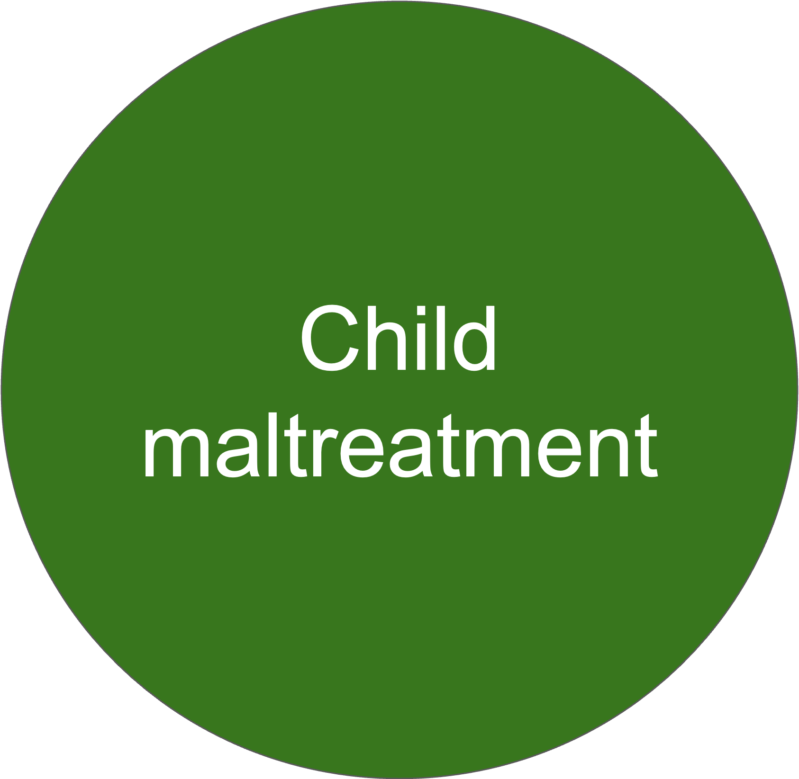

Squaring the Circle: Is Triangulation of Child Abuse Reports Helpful?
Nehal Eldeeb
Andy Grogan-Kaylor
Lijian Zhao
Sunghyun Hong
Olivia Chang
Todd Herrenkohl
December 27, 2025
Background
The measurement of child maltreatment has been a longstanding issue.
Information about child maltreatment can come from multiple sources.
There may be discrepancies across administrative records, parent-reports, and self-reports.
One proposed solution is “triangulation”, or integrating data from multiple reporters and sources.
However, it remains unclear how best to operationalize this concept.
Objective
This study examines the concept of “triangulation” by employing different advanced analytic methods to determine whether these methods reveal a common underlying construct of physical abuse and whether they predict adult depression.
Participants and Setting
Data come from the Lehigh Study, a 40+ year prospective study that began in the 1970s with children ages 18 months to 6 years of age.
Data were collected in early childhood, middle childhood, adolescence, and adulthood (ages 36 and 46, on average).
Methods
We applied five analytic approaches - network analysis, ordinary least squares (OLS) regression, structural equation modeling (SEM), latent profile analysis (LPA), and a cumulative index regression - to assess the relationships among multiple reporters of childhood physical abuse and adult depression.
Results
SEM (structural equation modeling) best modeled the latent construct of physical abuse and significantly predicted adult depression.
Adult self-reports played a particularly strong role.
Network analysis also highlighted strong intercorrelations among self-reports and meaningful links with depression.
Conclusion
SEM and network analysis were the most informative for triangulation and prediction of adult depression.
Adult self-reports of abuse were most related and most predictive of adult depression.
These findings highlight the usefulness of using advanced quantitative methods when presented with data from multiple reporters, along with the importance and validity of self-reports.

\[\text{cor}(\text{reporter}_k, \text{reporter}_j) \tag{1}\]
\[\text{outcome} = \beta_0 + \beta \text{PR1} + \beta \text{PR2} + \beta \text{SR1} + \beta \text{SR2} + \beta \text{SR3} + \beta \text{administrative} + \Sigma \beta \text{covariates} + e_i \tag{2}\]
\[\begin{aligned} \text{PR1} &= 1 \cdot X + e_1 \\ \text{PR2} &= \lambda_2 \cdot X + e_2 \\ \text{SR1} &= \lambda_3 \cdot X + e_3 \\ \text{SR2} &= \lambda_4 \cdot X + e_4 \\ \text{SR3} &= \lambda_5 \cdot X + e_5 \\ \text{Administrative} &= \lambda_6 \cdot X + e_6 \\ \text{Outcome} &= \beta_0 + \beta_1 X + \sum_{j} \beta_{2j} \text{Covariate}_j + e_0 \\ \end{aligned} \tag{3}\]
\[P(C=k) = logit(\beta_0 + \Sigma \beta_j \text{reporter}_j) \tag{4}\]
\[\text{outcome} = \beta_0 + \beta \text{reporter count} + \Sigma \beta \text{covariates} + e_i \tag{5}\]